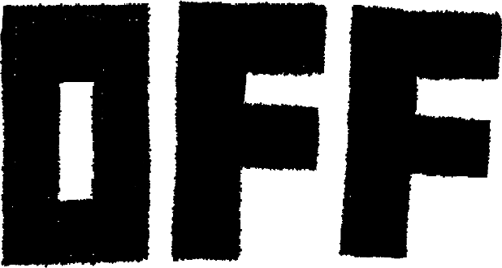

Aviso de não oficialidade e uso de material
Este jogo não é oficial e não foi criado para fins comerciais ou lucrativos. Não obtenho lucro algum com este projeto. OFF foi criado por Mortis Ghost. Os sprites e demais recursos são de uso autorizado apenas para fins pessoais e não comerciais, respeitando os direitos autorais conforme a Lei nº 9.610/1998 (Lei de Direitos Autorais). O uso do material foi referenciado com os devidos créditos e link para o criador oficial na página de referências. Qualquer uso comercial ou distribuição sem autorização prévia do detentor dos direitos é proibido.
Sobre o DAY OFF
DAY OFF é um jogo sokoban desenvolvido por um aluno da FEI, inspirado pelo jogo OFF (2008) criado por Mortis Ghost. O jogo foi inspirado pelo estilo de jogos conhecidos como sokoban (倉庫番, Sōkoban), que é uma palavra de origem japonesa que significa "guardião de armazém" ou "zelador de armazém". Uma das outras influências além de OFF foi Helltaker, um jogo sokoban criado por vanripper ou Łukasz Piskorz.
O que é OFF?
OFF (estilizado em letras maiúsculas ) é um jogo eletrônico de RPG de 2008 desenvolvido e publicado pela equipe belga Unproductive Fun Time, composta por Martin Georis ("Mortis Ghost") e Alias Conrad Coldwood. O jogo gira em torno de uma entidade humanoide enigmática conhecida como Batedor (ou Batter), descrita como estando em uma "missão sagrada" para "purificar" o mundo de OFF. O Batedor viaja por quatro Zonas bizarras no mundo, revelando mais sobre ele à medida que o jogo avança.
Criador de OFF
Martin Georis (nascido em 1987), também conhecido como Mortis Ghost, é um quadrinista belga e desenvolvedor de jogos. Ele é mais conhecido por criar o aclamado jogo surreal RPG Maker OFF junto com o amigo dele Alias Conrad Coldwood. O jogo foi lançado inicialmente em 14 de maio de 2008, e um remake do jogo foi desenvolvido com Fangamer e lançado em 15 de agosto de 2025.
Compositor de OFF
Alias Conrad Coldwood é um artista e compositor musical, mais conhecido por criar a trilha sonora original de OFF em 2008. Ele é amigo de Mortis Ghost, o criador de OFF, e juntos compõem a equipe Unproductive Fun Time. É músico profissional e até hoje cria música.
Criador de Helltaker
Łukasz Piskorz‚ também conhecido como Vanripper, é um animador polonês e desenvolvedor de jogos. É conhecido por ser o criador de Helltaker.
Desenvolvedor de DAY OFF
Estudante de Ciências de Computação na FEI.
Referências
Aviso sobre as imagens usadas e sprites.
Este jogo não é oficial e não foi criado para fins comerciais ou lucrativos. Não obtenho lucro algum com este projeto. OFF foi criado por Mortis Ghost. Os sprites usados são da versão de 2008 de OFF, que pode ser baixada no site oficial da Unproductive Fun Time. As imagens de fundo são do site oficial OffTheRPG. Essas imagens são gratuitas e podem ser obtidas diretamente do site, inclusive usando o recurso de inspeção do navegador.